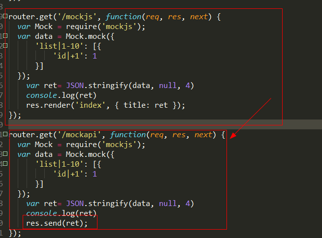

在上一个项目（2.express+supersvisor+mockjs）步骤的基础上，复制第二段router.get()方法，并放到他的下面，将这个方法内的最后一句： res.render('index', { title: ret }); 改为：res.send(ret) 如下图：  此时在运行， 输入命令： supervisor ./bin/www 打开浏览器输入：localhost:3000\mockapi 此时会有json格式的数据输出到页面 页面上输出的就是纯json数据